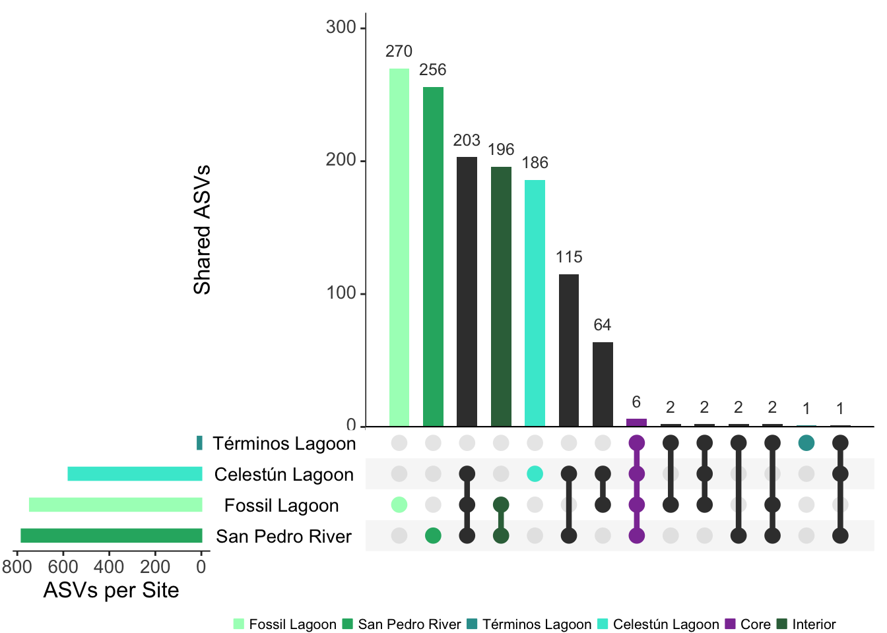

Core microbiome
Load libraries and prepare data
#load data
physeq_qiime3 <- readRDS("rds/compare_mangroves/physeq_qiime3.rds")# Rename mangrove system columna
colnames(sample_data(physeq_qiime3))[colnames(sample_data(physeq_qiime3)) == "Mangrove system"] <- "Mangrove_system"
# Convert Mangrove_system to factor
sample_data(physeq_qiime3)$Mangrove_system <- as.factor(sample_data(physeq_qiime3)$Mangrove_system)01. Calculate core
# Prevalence threshold
prevalence_threshold <- 0.8
# Storage ASVs core list
core_list <- list()
locations <- levels(sample_data(physeq_qiime3)$Mangrove_system)
# Calculate core
for (loc in locations) {
# Filter samples by mangrove system
physeq_loc <- prune_samples(sample_data(physeq_qiime3)$Mangrove_system == loc, physeq_qiime3)
n_samples_loc <- nsamples(physeq_loc)
# Extract OTU table
otu <- as(otu_table(physeq_loc), "matrix")
# Calc prevalence
prevalence <- rowSums(otu > 0) / n_samples_loc
# Identify ASVs with prevalence >= umbral
core_taxa <- names(prevalence)[prevalence >= prevalence_threshold]
# Guardar en la lista
core_list[[loc]] <- core_taxa
}
# Show ASVs core by mangrove system
print(lapply(core_list, length))$`Celestún Lagoon`
[1] 577
$`Fossil Lagoon`
[1] 745
$`San Pedro River`
[1] 781
$`Términos Lagoon`
[1] 16# checkpoint,if empty try threshold = 1
if (all(sapply(core_list, length) == 0)) {
cat("Try prevalence = 1...\n")
prevalence_threshold <- 1.0
core_list <- list()
for (loc in locations) {
physeq_loc <- prune_samples(sample_data(physeq_qiime3)$Mangrove_system == loc, physeq_qiime3)
n_samples_loc <- nsamples(physeq_loc)
otu <- as(otu_table(physeq_loc), "matrix")
prevalence <- rowSums(otu > 0) / n_samples_loc
core_taxa <- names(prevalence)[prevalence >= prevalence_threshold]
core_list[[loc]] <- core_taxa
}
print(lapply(core_list, length))
}02. Extract core info
# Unique core ASV list
all_core_asvs <- unique(unlist(core_list))
# Create matrix presence/absence
core_matrix <- matrix(0, nrow = length(all_core_asvs), ncol = length(locations),
dimnames = list(all_core_asvs, locations))
# fill matrix:
for (loc in locations) {
core_matrix[core_list[[loc]], loc] <- 1
}
# Convert to data frame to UpSetR
core_df <- as.data.frame(core_matrix)
# Create intersection list
queries_list <- list()03. plot aesthetics
#library(UpSetR)
# Fossil Lagoon
queries_list <- append(queries_list, list(
list(query = intersects, params = list("Fossil Lagoon"), color = "#A7FCC1",
active = TRUE, query.name = "Fossil Lagoon")
))
# San Pedro River
queries_list <- append(queries_list, list(
list(query = intersects, params = list("San Pedro River"), color = "#26B170",
active = TRUE, query.name = "San Pedro River")
))
# Terminos Lagoon
queries_list <- append(queries_list, list(
list(query = intersects, params = list("Términos Lagoon"), color = "#329D9C",
active = TRUE, query.name = "Términos Lagoon")
))
# Celestún
queries_list <- append(queries_list, list(
list(query = intersects, params = list("Celestún Lagoon"), color = "#41E8D3",
active = TRUE, query.name = "Celestún Lagoon")
))
# Core
queries_list <- append(queries_list, list(
list(query = intersects, params = list("Fossil Lagoon",
"San Pedro River",
"Términos Lagoon",
"Celestún Lagoon"),
color = "#8D3CA3", active = TRUE, query.name = "Core")))
# Interior
queries_list <- append(queries_list, list(
list(query = intersects, params = list("Fossil Lagoon", "San Pedro River"),
color = "#356E48", active = TRUE, query.name = "Interior")
))
## Note: due to the fact that there were no unique asvs for coastal, it was not integrated in this selection.04. UpSet plot
#library(UpSetR)
upset_plot <- upset(core_df,
sets = colnames(core_df),
order.by = "freq",
mainbar.y.label = "Shared ASVs",
sets.x.label = "ASVs per Site",
text.scale = 1.5,
point.size = 4,
line.size = 1.5,
query.legend = "bottom",
sets.bar.color =
c("#26B170","#A7FCC1","#41E8D3","#329D9C"),
queries = queries_list)
# show
print(upset_plot)
save plot
05. Get unique and core ASV info
### get unique ASVs per mangrove system
unique_asvs <- list()
for (loc in colnames(core_df)) {
unique_asvs[[loc]] <- rownames(core_df)[rowSums(core_df == 1) == 1 & core_df[[loc]] == 1]
cat(loc, ": Unique ASVs:", length(unique_asvs[[loc]]), "\n")
print(head(unique_asvs[[loc]], 5)) # Show first 5
}Celestún Lagoon : Unique ASVs: 186
[1] "KU578729.1.1383" "JF344529.1.1525" "JN483938.1.1414" "HE804536.1.1436"
[5] "DQ811792.1.1512"
Fossil Lagoon : Unique ASVs: 270
[1] "FN398053.1.1489" "FR667789.1.1446" "EU385876.1.1464" "EU487871.1.1472"
[5] "JQ989640.1.1399"
San Pedro River : Unique ASVs: 256
[1] "KY618740.1.1206" "EU592483.1.1535" "LN567307.1.1331" "DQ363844.1.926"
[5] "HM598151.1.1526"
Términos Lagoon : Unique ASVs: 1
[1] "EU487913.1.1482"#unique_asvs# Verify taxonomy
if (!is.null(tax_table(physeq_qiime3))) {
tax_table_df <- as.data.frame(tax_table(physeq_qiime3))
# Get taxonomy function
get_taxonomy <- function(asv_list) {
if (length(asv_list) > 0) {
taxonomy <- tax_table_df[asv_list, , drop = FALSE]
return(taxonomy)
} else {
return(NULL)
}
}
# Get taxonomy
taxonomy_unique <- lapply(unique_asvs, get_taxonomy)
# show first 5 unique ASVs
for (loc in names(taxonomy_unique)) {
cat("\nFirst unique ASVs taxonomy", loc, ":\n")
if (!is.null(taxonomy_unique[[loc]])) {
print(head(taxonomy_unique[[loc]], 5))
} else {
cat("There are no unique ASV to", loc, "\n")
}
}
} else {
cat("Please import taxonomy.\n")
}
First unique ASVs taxonomy Celestún Lagoon :
Kingdom Phylum
KU578729.1.1383 d__Bacteria Verrucomicrobiota
JF344529.1.1525 d__Bacteria Sva0485
JN483938.1.1414 d__Bacteria Bacteroidota
HE804536.1.1436 d__Bacteria Actinobacteriota
DQ811792.1.1512 d__Bacteria SAR324_clade(Marine_group_B)
Class Order
KU578729.1.1383 Omnitrophia Omnitrophales
JF344529.1.1525 Sva0485 Sva0485
JN483938.1.1414 Bacteroidia Cytophagales
HE804536.1.1436 Coriobacteriia OPB41
DQ811792.1.1512 SAR324_clade(Marine_group_B) SAR324_clade(Marine_group_B)
Family Genus
KU578729.1.1383 Omnitrophaceae Candidatus_Omnitrophus
JF344529.1.1525 Sva0485 Sva0485
JN483938.1.1414 Cyclobacteriaceae uncultured
HE804536.1.1436 OPB41 OPB41
DQ811792.1.1512 SAR324_clade(Marine_group_B) SAR324_clade(Marine_group_B)
Species
KU578729.1.1383 <NA>
JF344529.1.1525 <NA>
JN483938.1.1414 <NA>
HE804536.1.1436 <NA>
DQ811792.1.1512 uncultured_delta
First unique ASVs taxonomy Fossil Lagoon :
Kingdom Phylum Class
FN398053.1.1489 d__Bacteria Proteobacteria Gammaproteobacteria
FR667789.1.1446 d__Bacteria Proteobacteria Alphaproteobacteria
EU385876.1.1464 d__Bacteria Proteobacteria Gammaproteobacteria
EU487871.1.1472 d__Bacteria Chloroflexi Dehalococcoidia
JQ989640.1.1399 d__Archaea Thermoplasmatota Thermoplasmata
Order
FN398053.1.1489 Cellvibrionales
FR667789.1.1446 Micropepsales
EU385876.1.1464 UBA10353_marine_group
EU487871.1.1472 Napoli-4B-65
JQ989640.1.1399 Marine_Benthic_Group_D_and_DHVEG-1
Family
FN398053.1.1489 Halieaceae
FR667789.1.1446 Micropepsaceae
EU385876.1.1464 UBA10353_marine_group
EU487871.1.1472 Napoli-4B-65
JQ989640.1.1399 Marine_Benthic_Group_D_and_DHVEG-1
Genus Species
FN398053.1.1489 <NA> <NA>
FR667789.1.1446 Micropepsaceae uncultured_bacterium
EU385876.1.1464 UBA10353_marine_group uncultured_bacterium
EU487871.1.1472 Napoli-4B-65 uncultured_bacterium
JQ989640.1.1399 Marine_Benthic_Group_D_and_DHVEG-1 uncultured_archaeon
First unique ASVs taxonomy San Pedro River :
Kingdom Phylum Class
KY618740.1.1206 d__Bacteria Firmicutes Bacilli
EU592483.1.1535 d__Bacteria Desulfobacterota Desulfobacteria
LN567307.1.1331 d__Bacteria Proteobacteria Alphaproteobacteria
DQ363844.1.926 d__Archaea Thermoplasmatota Thermoplasmata
HM598151.1.1526 d__Bacteria Desulfobacterota Desulfobacteria
Order Family Genus
KY618740.1.1206 Bacillales Bacillaceae Bacillus
EU592483.1.1535 Desulfatiglandales Desulfatiglandaceae Desulfatiglans
LN567307.1.1331 Rhizobiales Methyloligellaceae uncultured
DQ363844.1.926 uncultured uncultured uncultured
HM598151.1.1526 Desulfatiglandales Desulfatiglandaceae Desulfatiglans
Species
KY618740.1.1206 <NA>
EU592483.1.1535 uncultured_bacterium
LN567307.1.1331 <NA>
DQ363844.1.926 uncultured_archaeon
HM598151.1.1526 <NA>
First unique ASVs taxonomy Términos Lagoon :
Kingdom Phylum Class Order
EU487913.1.1482 d__Bacteria Chloroflexi Anaerolineae Anaerolineales
Family Genus Species
EU487913.1.1482 Anaerolineaceae uncultured <NA># Confirm the total number of unique ASVs
lapply(taxonomy_unique, function(x) if (!is.null(x)) nrow(x) else 0)$`Celestún Lagoon`
[1] 186
$`Fossil Lagoon`
[1] 270
$`San Pedro River`
[1] 256
$`Términos Lagoon`
[1] 1Get taxonomy
Phylum level
# Create a list to store unique asv to Phylum level
phylum_unique <- list()
# Iterate on each Mangrove system
for (loc in names(taxonomy_unique)) {
if (!is.null(taxonomy_unique[[loc]])) {
# Extract taxonomy phylum
tax_df <- taxonomy_unique[[loc]]
if ("Phylum" %in% colnames(tax_df)) {
phylum <- tax_df$Phylum
phylum <- phylum[!is.na(phylum)] # Exclude NA
phylum_unique[[loc]] <- unique(phylum)
} else {
cat("Phylum is not available to", loc, "\n")
phylum_unique[[loc]] <- character(0)
}
} else {
phylum_unique[[loc]] <- character(0)
}
}
# Identify exclusive phylum for Mangrove system
all_phylums <- unique(unlist(phylum_unique))
phylum_exclusive <- list()
for (loc in names(phylum_unique)) {
other_locations <- setdiff(names(phylum_unique), loc)
other_phylum <- unique(unlist(phylum_unique[other_locations]))
exclusive_phylum <- setdiff(phylum_unique[[loc]], other_phylum)
phylum_exclusive[[loc]] <- exclusive_phylum
cat("Exclusive phylum in", loc, ":", length(exclusive_phylum), "\n")
if (length(exclusive_phylum) > 0) {
print(exclusive_phylum)
} else {
cat("There are not exclusive phylum.\n")
}
}Exclusive phylum in Celestún Lagoon : 5
[1] "SAR324_clade(Marine_group_B)" "RCP2-54"
[3] "Caldatribacteriota" "CK-2C2-2"
[5] "Nitrospinota"
Exclusive phylum in Fossil Lagoon : 12
[1] "Patescibacteria" "Modulibacteria" "Elusimicrobiota" "Halobacterota"
[5] "PAUC34f" "Micrarchaeota" "Hydrogenedentes" "LCP-89"
[9] "Cyanobacteria" "Armatimonadota" "Dependentiae" "Acetothermia"
Exclusive phylum in San Pedro River : 3
[1] "Dadabacteria" "Abditibacteriota" "Sumerlaeota"
Exclusive phylum in Términos Lagoon : 0
There are not exclusive phylum.Family level
# Create a list to store unique asv to specific taxonomy level
families_unique <- list()
# Iterate on each Mangrove system
for (loc in names(taxonomy_unique)) {
if (!is.null(taxonomy_unique[[loc]])) {
# Extract taxonomy families
tax_df <- taxonomy_unique[[loc]]
if ("Family" %in% colnames(tax_df)) {
families <- tax_df$Family
families <- families[!is.na(families)] # Exclude NA
families_unique[[loc]] <- unique(families)
} else {
cat("Family is not available to", loc, "\n")
families_unique[[loc]] <- character(0)
}
} else {
families_unique[[loc]] <- character(0)
}
}
# Identify exclusive family for Mangrove system
all_families <- unique(unlist(families_unique))
families_exclusive <- list()
for (loc in names(families_unique)) {
other_locations <- setdiff(names(families_unique), loc)
other_families <- unique(unlist(families_unique[other_locations]))
exclusive_families <- setdiff(families_unique[[loc]], other_families)
families_exclusive[[loc]] <- exclusive_families
cat("Exclusive family in", loc, ":", length(exclusive_families), "\n")
if (length(exclusive_families) > 0) {
print(exclusive_families)
} else {
cat("There are not exclusive family.\n")
}
}Exclusive family in Celestún Lagoon : 26
[1] "OPB41" "SAR324_clade(Marine_group_B)"
[3] "Hungateiclostridiaceae" "MBAE14"
[5] "RCP2-54" "Odinarchaeia"
[7] "Subgroup_9" "Nitrosomonadaceae"
[9] "EF100-94H03" "Desulfomonilaceae"
[11] "CCM11a" "FW22"
[13] "JS1" "Microbulbiferaceae"
[15] "Ectothiorhodospiraceae" "TG3"
[17] "B2M28" "Caldilineaceae"
[19] "Nitrososphaeraceae" "Subgroup_21"
[21] "Gaiellaceae" "CK-2C2-2"
[23] "Rhizobiales_Incertae_Sedis" "Geothermarchaeaceae"
[25] "PS-B29" "P9X2b3D02"
Exclusive family in Fossil Lagoon : 44
[1] "Micropepsaceae" "UBA10353_marine_group"
[3] "Bdellovibrionaceae" "Gracilibacteria"
[5] "Moduliflexaceae" "Lineage_IIc"
[7] "SM23-30" "Methanomicrobiaceae"
[9] "PAUC34f" "Nitrincolaceae"
[11] "MidBa8" "PAUC26f"
[13] "Bradymonadales" "Solimonadaceae"
[15] "Simkaniaceae" "67-14"
[17] "vadinHA49" "Micrarchaeales"
[19] "HOC36" "Melioribacteraceae"
[21] "Hydrogenedensaceae" "Pla3_lineage"
[23] "LCP-89" "Rhodobacteraceae"
[25] "Micavibrionales" "Desulfobacteraceae"
[27] "Pseudohongiellaceae" "Nostocaceae"
[29] "VHS-B4-70" "Dissulfuribacteraceae"
[31] "Run-SP154" "Blastocatellaceae"
[33] "VHS-B3-70" "Methylohalobiaceae"
[35] "SBYC" "Desulfovibrionaceae"
[37] "Vermiphilaceae" "Kineosporiaceae"
[39] "Bacteroidetes_vadinHA17" "Syntrophobacteraceae"
[41] "Acetothermiia" "Lentimicrobiaceae"
[43] "Haloadaptaceae" "MD2894-B20"
Exclusive family in San Pedro River : 38
[1] "Geopsychrobacteraceae" "OM182_clade" "Balneolaceae"
[4] "Subgroup_17" "Sulfurovaceae" "Dadabacteriales"
[7] "A4b" "Abditibacteriaceae" "bacteriap25"
[10] "Marine_Benthic_Group_A" "t0.6.f" "Rhodospirillaceae"
[13] "Clostridiaceae" "Thermoplasmata" "Saccharospirillaceae"
[16] "Subgroup_2" "DG-20" "Spongiibacteraceae"
[19] "Pla1_lineage" "Desulfococcaceae" "Thiomicrospiraceae"
[22] "Emcibacteraceae" "Eel-36e1D6" "Thermoplasmatota"
[25] "Sumerlaeaceae" "KI89A_clade" "PHOS-HE36"
[28] "Desulfurivibrionaceae" "Planococcaceae" "Hyphomonadaceae"
[31] "Colwelliaceae" "SAR202_clade" "Arcobacteraceae"
[34] "Thiotrichaceae" "Myxococcaceae" "C86"
[37] "AB-539-J10" "Bacteriovoracaceae"
Exclusive family in Términos Lagoon : 0
There are not exclusive family.Get core table
# Combine taxonomy in data.frame
taxonomy_unique_df <- do.call(rbind, lapply(names(taxonomy_unique), function(loc) {
if (!is.null(taxonomy_unique[[loc]])) {
df <- taxonomy_unique[[loc]]
df$Location <- loc
df$ASV <- rownames(df)# add name asv column
return(df)
} else {
return(NULL)
}
}))
# Move columns
taxonomy_unique_df <- taxonomy_unique_df[, c("ASV", "Location", setdiff(names(taxonomy_unique_df), c("ASV", "Location")))]
# show first rows of data.frame to verify
print(head(taxonomy_unique_df)) ASV Location Kingdom
KU578729.1.1383 KU578729.1.1383 Celestún Lagoon d__Bacteria
JF344529.1.1525 JF344529.1.1525 Celestún Lagoon d__Bacteria
JN483938.1.1414 JN483938.1.1414 Celestún Lagoon d__Bacteria
HE804536.1.1436 HE804536.1.1436 Celestún Lagoon d__Bacteria
DQ811792.1.1512 DQ811792.1.1512 Celestún Lagoon d__Bacteria
AF354161.1.1421 AF354161.1.1421 Celestún Lagoon d__Bacteria
Phylum Class
KU578729.1.1383 Verrucomicrobiota Omnitrophia
JF344529.1.1525 Sva0485 Sva0485
JN483938.1.1414 Bacteroidota Bacteroidia
HE804536.1.1436 Actinobacteriota Coriobacteriia
DQ811792.1.1512 SAR324_clade(Marine_group_B) SAR324_clade(Marine_group_B)
AF354161.1.1421 Calditrichota Calditrichia
Order Family
KU578729.1.1383 Omnitrophales Omnitrophaceae
JF344529.1.1525 Sva0485 Sva0485
JN483938.1.1414 Cytophagales Cyclobacteriaceae
HE804536.1.1436 OPB41 OPB41
DQ811792.1.1512 SAR324_clade(Marine_group_B) SAR324_clade(Marine_group_B)
AF354161.1.1421 Calditrichales Calditrichaceae
Genus Species
KU578729.1.1383 Candidatus_Omnitrophus <NA>
JF344529.1.1525 Sva0485 <NA>
JN483938.1.1414 uncultured <NA>
HE804536.1.1436 OPB41 <NA>
DQ811792.1.1512 SAR324_clade(Marine_group_B) uncultured_delta
AF354161.1.1421 Calditrichaceae <NA># save data.frame
write.csv(taxonomy_unique_df, file = "Tables/SurfaceComparison/unique_asvs_taxonomy.csv", row.names = FALSE)Save rds core plot
saveRDS(upset_plot, "Figures/SurfaceComparison/upset_surface_plot.rds")